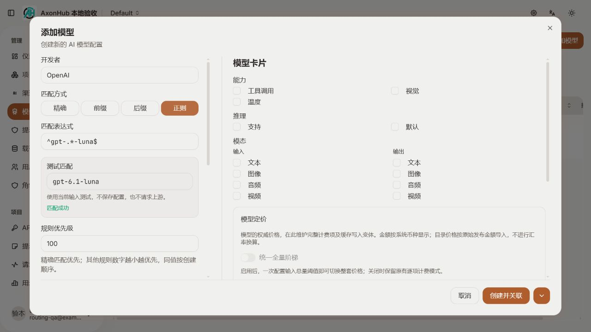
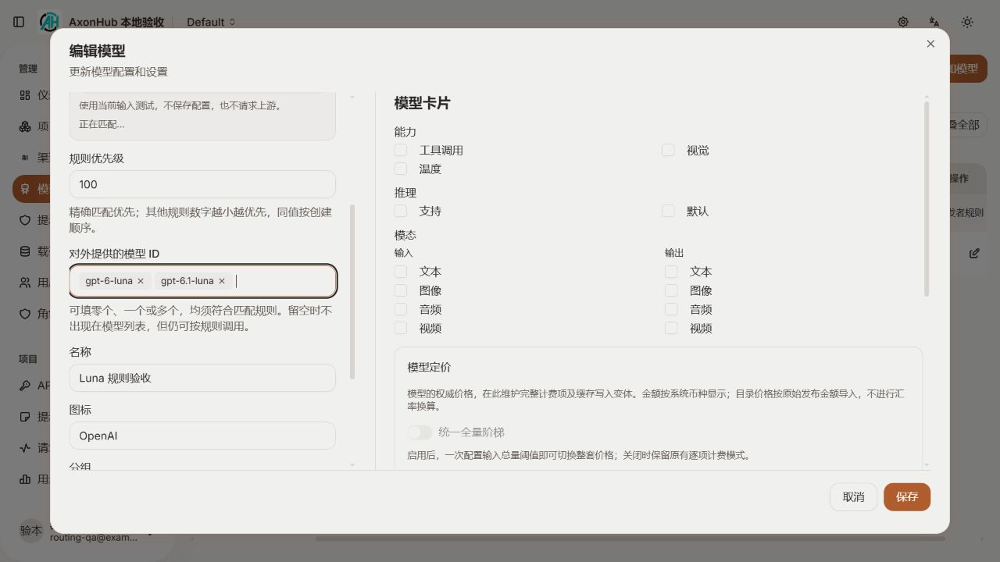
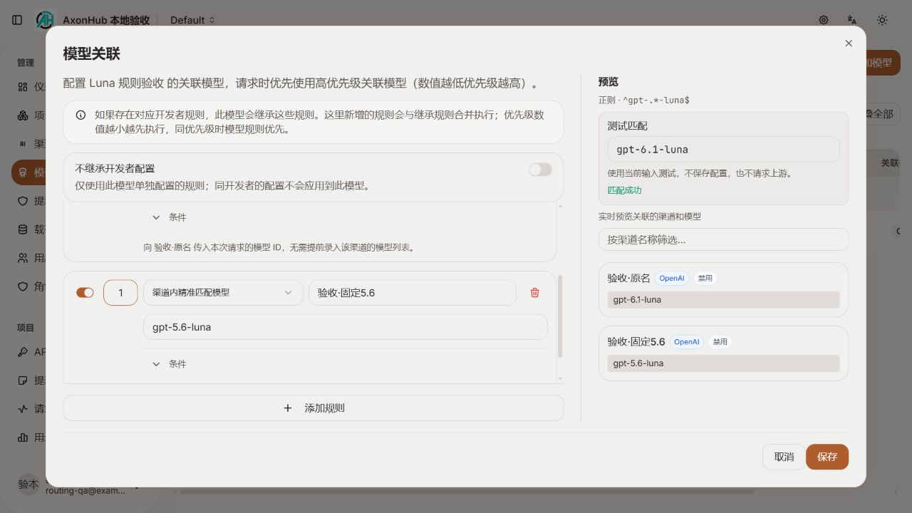
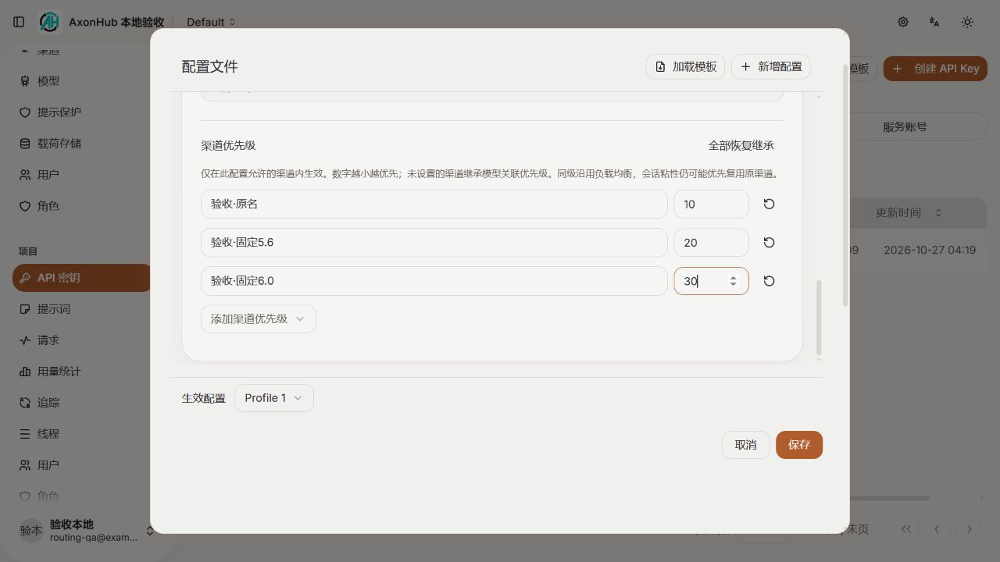
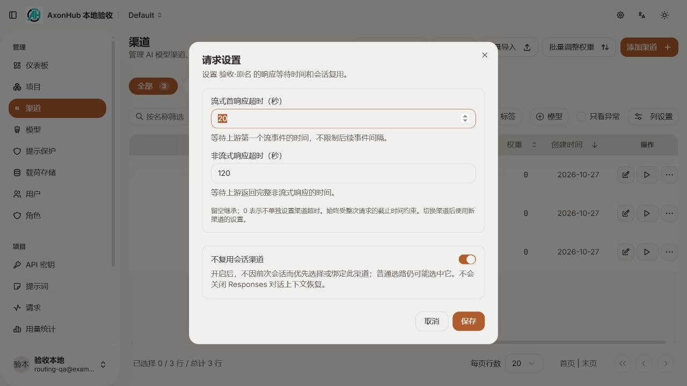

下方是本次代码在本地运行时的真实截图。切换页签查看四处改动，点击图片可放大。
真实前端使用独立本地数据库，首次需要初始化本地账号；修改前端源码后会自动更新。本页的截图用于查看布局，不会提交配置。
精确、前缀、后缀、正则四种入口；未保存也能测试匹配。公开模型 ID 单独填写零个、一个或多个。


保留原关联方式、条件与继承设置；新增“渠道内沿用请求模型”，右侧按测试 ID 预览。

在现有生效配置里添加优先级；数字越小越优先，未设置时继承模型关联。支持现有模板同步。

渠道行菜单里的“请求设置”：流式首响应、非流式响应超时，以及不复用会话渠道。留空继承，0 取消该项渠道限制。
